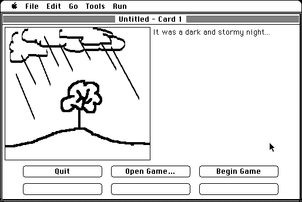

Download
gamemaker_291_freeware.zip (205K) GameMaker v2.9.1 repackaged into a zipped hfs disk image and checksum file. The disk image can be mounted with Mini vMac.
gamemaker_291_freeware.sit (205K) GameMaker v2.9.1 in the original format.
copyright: Al Staffieri Jr.
mod date: Apr 21, 2010
license: Freeware
official url :
Al's Older Macintosh Software
An “easy to use card based development system which allows you to create simple adventure games with graphics, buttons, and text.” You can “compile your game into a real stand-alone application”. For System 6.0.5 or later.

If you find these downloads useful, please consider helping the Gryphel Project, which hosts them.
Here are the md5 checksums for the downloads, signed with Gryphel Key 5:
--------- GRY SIGNED TEXT --------- d818e1cb1a68bf37ba751a41652e8b43 gamemaker_291_freeware.zip b976e959cb06d0985e29f03d5b1d8b2b gamemaker_291_freeware.sit ------- BEGIN GRY SIGNATURE ------- Gry/4Xa8CFcUzxdN/OSOsChmJppEPf8TNh9HmhHR7BjjvR18yJEnESOSdJ00i3d/ w1zqXnmhQaS3sWMmvMxg/tjZXU3qVq2PNbmH+I/+Dml16gfhVMnjOl6CE436vpol 4YpdbMs52TxrrjZgUfLnq56v0PLi34u8QivAfOQO9Brv5ujA9VJIC4S43vByHb6x -------- END GRY SIGNATURE --------